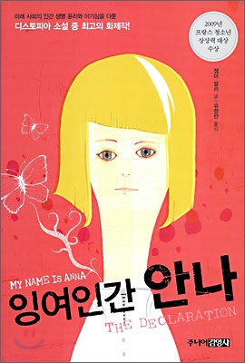

우리가 빛의 속도로 갈 수 없다면
저자.김초엽 출판.허블
매력적인 ‘할머니 과학자’가 주인공으로 등장한다. 인물을 통해 소설은 어째서 어떤 고통은 기꺼이 감내할 수 있는지, 생의 끝에서 최선을 다한다는 것은 무엇인지를 자꾸만 묻는 듯하다. 문학상 이후 김초엽의 작품들은 더욱 확장된 세계를 그려낸다. 작가의 고민과 질문도 더 단단해진듯하다. 다섯 개의 위성이 뜨는 행성에 홀로 남겨져 외계인과 조우하게 될지라도(「스펙트럼」), 고통 없는 유토피아에서 짐짓 모르는 것처럼 질문하지 않고 살아갈 수 있을 때에도(「순례자들은 왜 돌아오지 않는가」). 그럼에도 불구하고 나의 세계를, 우리의 세계를 알아야겠다고 용기 내는 마음, 우리의 사랑과 우정을 말하며 지지 않는 마음, 분투하는 태도가 김초엽의 소설에는 있다.

잉여인간 안나
저자.젬마 말리/유향란 출판.주니어김영사
우리가 사는 사회와 앞으로 다가올 미래를 새로운 시각으로 바라보게 하며 우리가 당연하다고 생각하면서 누리고 있는 자유와 특권을 다시 한번 돌아보게 하는 디스토피아 소설이다. 디스토피아 소설이란 현재의 문제점을 미래로 확장시켜 부정적이고 암울한 미래 세계를 그래냄으로써 현실을 날카롭게 비판하는 소설을 말한다. 이 책은 현재에 만연하는 외적 아름다움에 대한 추구와 개인의 무한한 이기심을 2140년 영국이라는 무대로 확장시켜, 죽지 않는 장수약과 태어나면 안 되는 잉여인간이란 두가지 축으로 이야기를 펼쳐나간다.